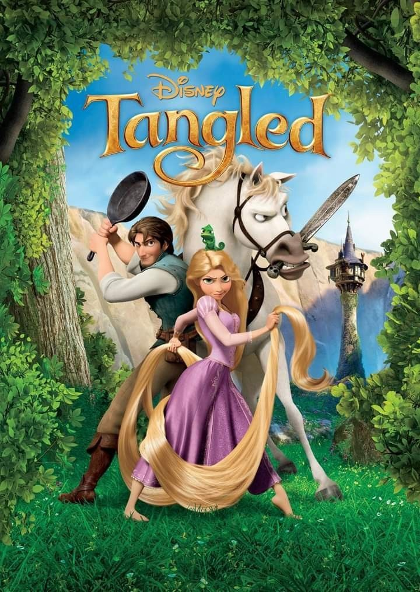
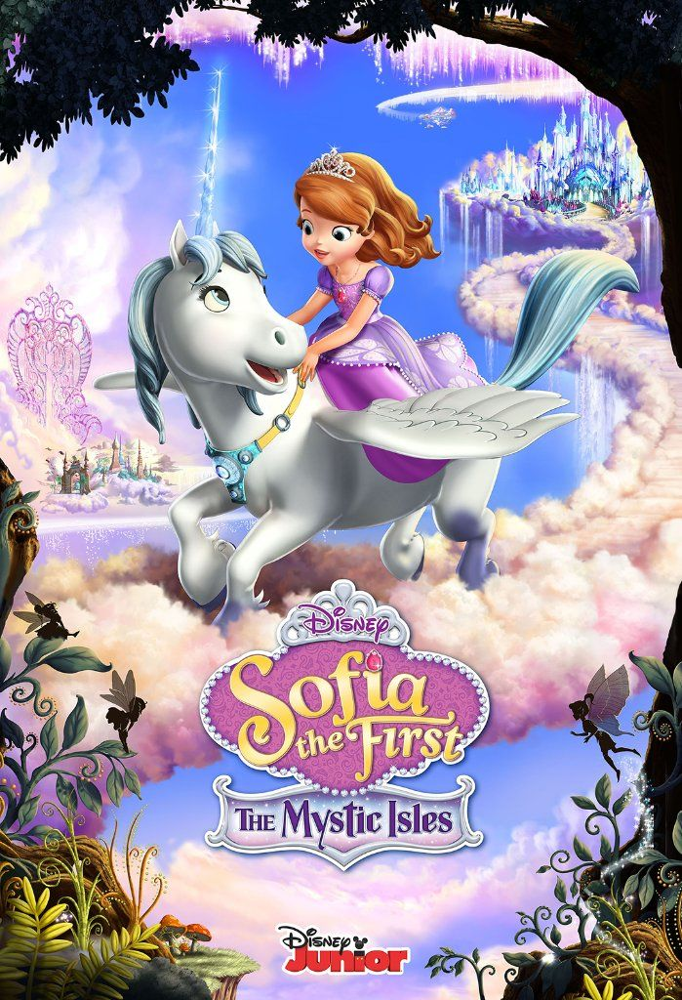
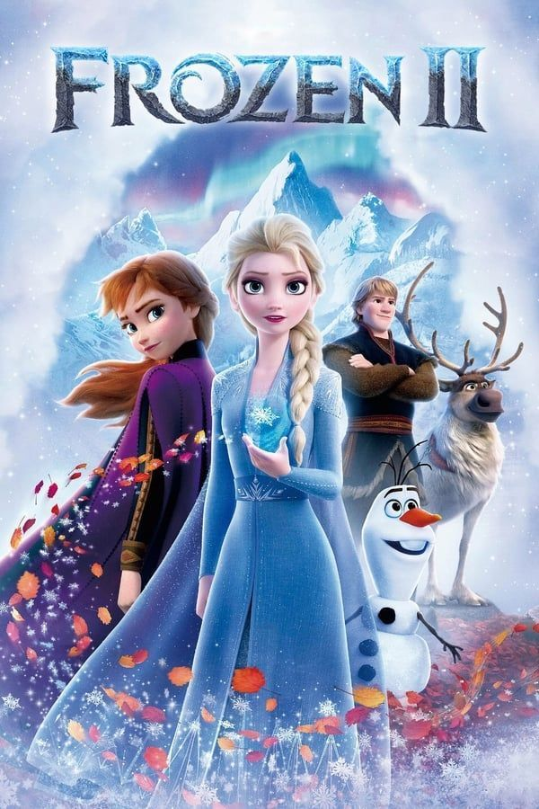

DisneyMovieZone

.jpeg)


Tangled
22 Nov 1995Views: 373,000,000Film Tangled adalah animasi dari Walt Disney Animation Studios yang diangkat dari dongeng Brothers Grimm. Ceritanya tentang Rapunzel, putri berambut ajaib yang dikurung oleh Mother Gothel. Hidupnya berubah saat bertemu Flynn Rider, yang membantunya keluar dari menara dan menemukan jati dirinya.
Watch This
Sofia the First
16 Jun 2023Views : 496,000,000Cerita Sofia the First berkisah tentang Sofia, gadis biasa yang menjadi putri setelah ibunya menikah dengan raja.Ia belajar hidup di istana, menghadapi berbagai tantangan, dan berusaha menjadi putri yang baik, bijaksana, serta rendah hati.
Watch This
Frozen II
24 Nov 2010Views : 3,487,497Film Frozen bercerita tentang dua saudara, Elsa dan Anna. Elsa memiliki kekuatan es yang tak terkendali hingga membuat kerajaan membeku dan ia mengasingkan diri. Anna kemudian mencari Elsa bersama teman-temannya. Pada akhirnya, Elsa belajar bahwa cinta dapat mengendalikan kekuatannya dan menyelamatkan kerajaan.
Watch This